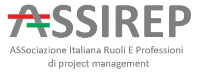

01
Database e infrastrutture
Oracle, PostgreSQL, MySQL/MariaDB, MongoDB, middleware e sistemi enterprise.
Information Technology · Project Management · Formazione
Sono Luca Paolo Giuseppe Prinzio, Database Administrator, IT Architect e Project Manager. Da oltre vent'anni lavoro in contesti complessi e mission critical, trasformando competenza tecnica, metodo e visione organizzativa in soluzioni affidabili e competenze trasferibili.
Profilo
Il mio profilo unisce competenze infrastrutturali profonde, gestione di progetti e formazione. Lavoro sul confine tra il sistema formale — architetture, processi e piani — e il sistema reale fatto di decisioni, responsabilità e collaborazione.
01
Oracle, PostgreSQL, MySQL/MariaDB, MongoDB, middleware e sistemi enterprise.
02
Alta affidabilità, replica, disaster recovery, cloud e automazione operativa.
03
Governance, stakeholder, rischio, pianificazione e approcci predittivi e Agile.
04
Docenza, progettazione didattica e pubblicazioni sul lavoro per progetti.
Esperienza
Dalla digitalizzazione della giustizia alle infrastrutture industriali e ai servizi cloud per la Pubblica Amministrazione.
Dicembre 2022 — oggi
Database Administrator · Ingegneria, automazione e sviluppo
Progettazione e ingegnerizzazione di servizi DBaaS per la Pubblica Amministrazione: piattaforme dati enterprise, alta affidabilità, replica, disaster recovery, standardizzazione e automazione nel cloud proprietario Nivola, con attenzione a cybersecurity, ACN e GDPR.
Gennaio 2017 — novembre 2022
Senior Consultant · IT Specialist / DBA Oracle, tramite Top Network
Amministrazione di database e middleware in ambienti Windows, Linux e IBM AIX; supporto a sistemi enterprise ad alta criticità e a piattaforme quali WebSphere, JBoss, Teamcenter, Team Concert e Microsoft Project.
2002 — 2016
Senior System Specialist · Project Manager · Responsabile tecnico
Progetti nazionali di digitalizzazione e dispiegamento dei sistemi RE.GE., SIGMA e SICP. Coordinamento di team fino a quindici persone, analisi funzionale, dimensionamento, migrazione dati, formazione e collaborazione con DGSIA.
Docenza e consulenza
Dal 2009 progetto ed erogo percorsi di Project Management, organizzazione, leadership e lavoro per obiettivi. Le attività recenti riportate qui derivano dalla documentazione amministrativa disponibile, senza informazioni economiche o fiscali.
2009
inizio dell'attività continuativa di docenza e consulenza
2 enti
collaborazioni formative recenti documentate
PM · Agile
metodo, persone, organizzazione e trasformazione
Attività concluse
Attività concluse
Le date indicano il mese registrato nella documentazione di riferimento. Gli incarichi programmati ma non ancora conclusi non sono pubblicati.
Certificazioni e profili
Riferimenti professionali esterni e una selezione del percorso di aggiornamento continuo in ambito tecnico e manageriale.

Profilo professionale ASSIREP Profilo pubblico nel registro dell'associazione Consulta il profilo ↗Pubblicazioni
Articoli e contenuti video dedicati a governance, comportamento, cybersecurity e capacità organizzativa nei progetti complessi.
Come riprogettare la governance affinché produca decisioni tempestive, anziché limitarsi a controllare documenti, ruoli e approvazioni.
Il divario tra approvazione formale, priorità reali e prontezza operativa.
Perché i progetti falliscono anche quando metodologie e strumenti sono corretti.
L'impatto sproporzionato di un singolo comportamento tossico sul gruppo.
Sicurezza come leva di valore pubblico, resilienza e innovazione sostenibile.
Un percorso formativo dedicato ai principi, ai processi e agli strumenti essenziali del Project Management.
Contatti
Torino e attività da remoto. I profili esterni raccolgono aggiornamenti, esperienze e riferimenti professionali verificabili.